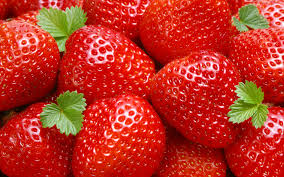

Capsuni

Căpșuna este un fruct fals, parfumat și dulce, recunoscut după culoarea roșie intensă și micile semințe exterioare numite achene. Aceasta crește pe plante erbacee târâtoare și aparține familiei Rosaceae. Este apreciată la nivel mondial atât proaspătă, cât și în deserturi, datorită aromei sale revigorante.